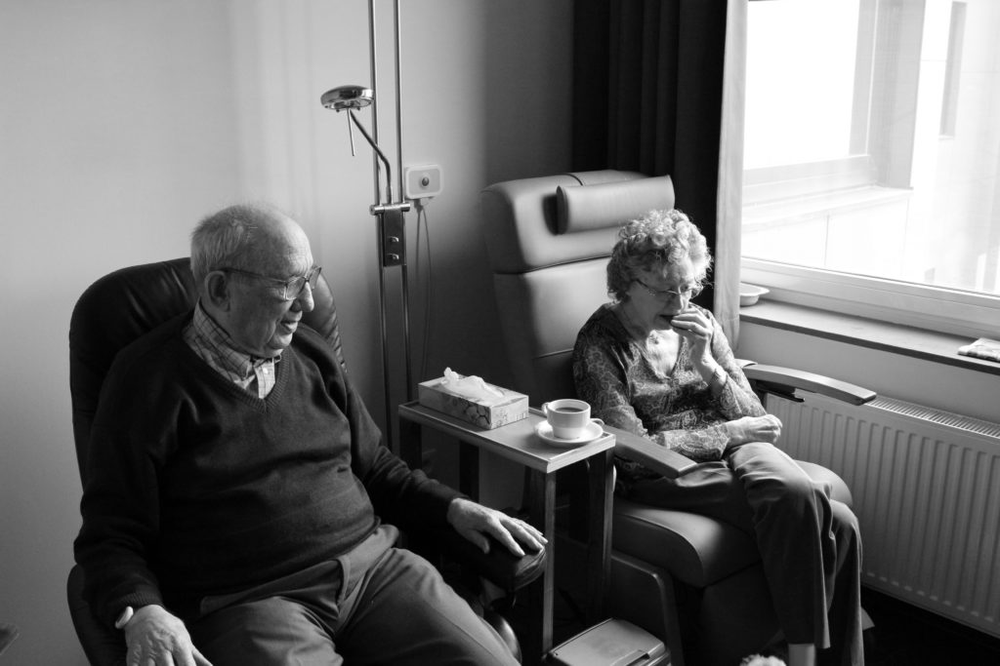

Even if we find it difficult to define power, we have all been in situations where we know that power, or one of its related concepts, has been exercised over us and when we exercise power over others.
What is power
Select the images to learn more about power or use the arrows to move through the images.
On the other hand, you know when you are on the powerful side of things when you have felt grand because you asked someone to do something and they did it without questioning you.
It could be something as simple as going out for an expensive meal rather than eating cheaply at home and taking great pleasure at being able to afford such an experience.


What we don’t always realise is that some people end up in positions where they get to do what they want a lot. Others end up in situations where they have very little choice over their lives.
This ‘structuring’ of power can be difficult to notice and those with greater control and choice over their lives tend to take it for granted.